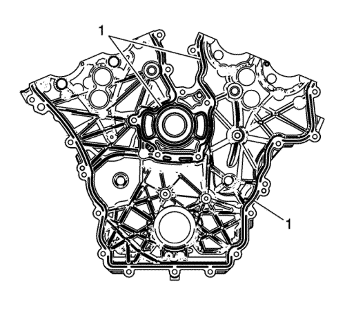
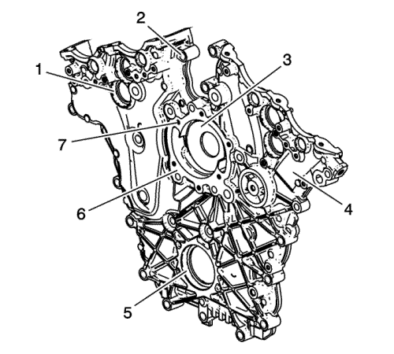
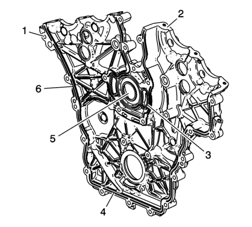

Limpieza e inspección de la tapa delantera del motor
Herramientas especiales
EN 28410 Herramienta de desmontaje de juntas
Si desea informarse sobre herramientas regionales equivalentes, consultar Herramientas especiales .
Procedimiento de limpieza

- Elimine el sellador RTV (1) de la cubierta delantera del motor usando el extractor EN 28410.
- Limpie la suciedad de los agujeros de los pernos.
- Limpie la tapa delantera del motor con disolvente.
Advertencia: Consulte Advertencia, protección ocular en la sección Prólogo
- Seque la tapa delantera del motor con aire comprimido.
Procedimiento de inspección

- Inspeccione lo siguiente para el exterior de la tapa delantera del motor:
| • | Daño a las roscas de los orificios de los pernos de la bomba de agua (7) |
| • | Arañazos o daños a las superficies de sellado de la bomba de agua (6) |
| • | Daños al orificio de sellado de aceite delantero del cigüeñal (5) |
| • | Daño a los orificios de sellado de la válvula del actuador de posición del árbol de levas (1) |
| • | Daño a los orificios de los pernos de la tapa delantera del motor (2). |
| • | Daños y corrosión al paso de refrigerante del motor (3). |
| • | Daños o mellas en el exterior (4) |

- Inspeccione lo siguiente para el interior de la tapa delantera del motor:
| • | Arañazos o daños a las superficies de sellado de la tapa delantera del motor para el bloque del motor (6), cárter de aceite (4), y tapas del árbol de levas (2) |
| • | Daños y corrosión al paso de refrigerante del motor (5). |
| • | Daños al orificio de sellado de aceite delantero del cigüeñal |
| • | Arañazos o daños a las superficies de sellado de la junta tórica |
| • | Arañazos o daños a la superficie de sellado de la bomba de agua (3) |
| • | Daño a los orificios de los pernos de la tapa delantera del motor (1). |
- Reparar o sustituir la tapa delantera del motor según sea necesario.
| © Copyright Chevrolet Europe. All rights reserved |